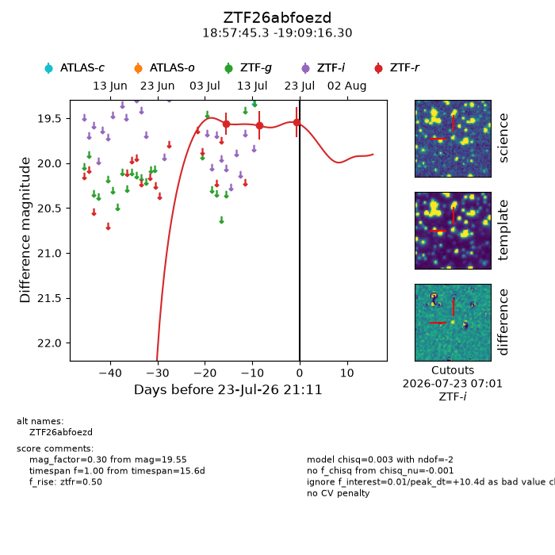
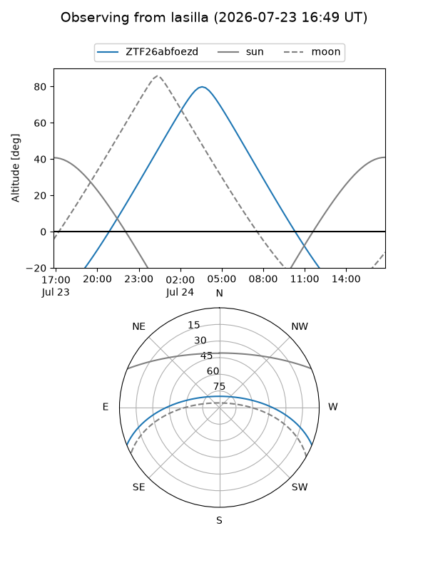
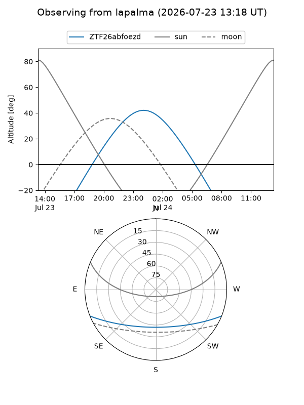
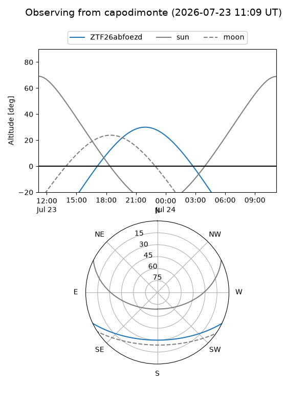
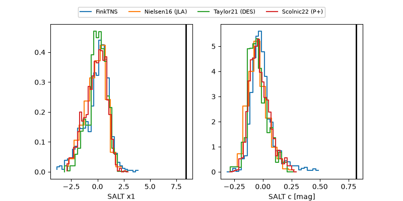

ZTF26abfoezd
Target ZTF26abfoezd at 2026-07-23 21:14
Aliases and brokers:
FINK-ZTF: ztf.fink-portal.org/ZTF26abfoezd
Lasair-ZTF: lasair-ztf.lsst.ac.uk/objects/ZTF26abfoezd
ALeRCE-ZTF: alerce.online/object/ZTF26abfoezd
Direct TNS query: direct search
alt names
ZTF26abfoezd (ztf,fink_ztf)
Coordinates:
equatorial (ra, dec) = 284.4388,-19.15453
equatorial (HMS+DMS) = 18:57:45.31,-19:09:16.30
galactic (l, b) = (16.4073,-9.94989)
Flags:
peak dt: +10.4
Photometry:
last ztfr=19.55
3 ztfr detections
Lightcurve

Visibility



Additional plots
